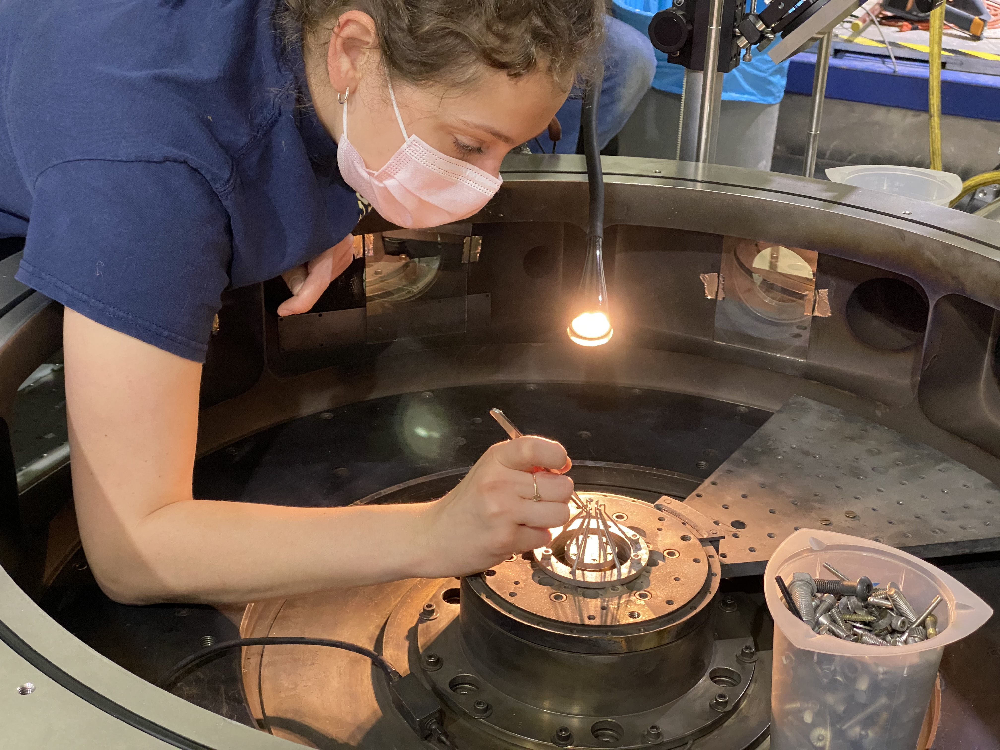

My Science
Laboratory Astrophysics: Looking at the cosmos up close
Studying the universe and celestial physics is fascinating, but because of its scale we cannot practically make the cosmos our laboratory. In the last couple of decades, though, a new discipline has emerged that allows physicists to experiment with scaled versions of astrophysical phenomena: laboratory astrophysics. This frontier field applies scaling arguments to the magnetohydrodrynamics (MHD) equations to produce dimensionless parameters that describe astrophysical processes. Because these parameters are just unitless ratios, they may be equal for processes of vastly different size and time scales. This means that, under carefully chosen conditions, a centimeter-scale plasma stream in a laboratory experiment can teach us about the physics of thousand-lightyear-long quasar jets emitted from supermassive black holes. These types of experiments have also been used to study molecular clouds, supernova shockwaves, and stellar atmospheres among other systems.
My Research
I work on a particular subset of laboratory astrophysics involving high energy density plasmas. These are extremely high-pressure systems (pressure has the same units as energy density) with matter in some of the most extreme conditions we can produce on earth. In my research, we used machines called pulsed-power drivers to store up huge quantities of electric charge and then discharge it in an extremely short burst. These bursts of current lasting hundreds of nanoseconds contain so much energy that they vaporize any conductive material that is thin enough. Thus, we can put different geometries of metal wires or sheets and vaporize them into plasmas with pulsed-power drivers! We call these metals that we vaporize (as well as any hardware it's mounted to) the load.
 My PhD research focused on a specific type of load that produces radially inflowing plasma that then shoots out in streams along the center axis. This type of system emulates the geometry of accretion disks that feed into astrophysical jets around stars or black holes. We coax the plasma into following this trajectory by influencing it with carefully designed magnetic fields. Since the current flowing through the load generates a magnetic field, by changing the orientation of that current path, we may create magnetic fields that push our plasma toward the center. This acts as our synthetic "gravity" that we use to make up for the fact that our systems don't have a massive star or black hole at the center.
My PhD research focused on a specific type of load that produces radially inflowing plasma that then shoots out in streams along the center axis. This type of system emulates the geometry of accretion disks that feed into astrophysical jets around stars or black holes. We coax the plasma into following this trajectory by influencing it with carefully designed magnetic fields. Since the current flowing through the load generates a magnetic field, by changing the orientation of that current path, we may create magnetic fields that push our plasma toward the center. This acts as our synthetic "gravity" that we use to make up for the fact that our systems don't have a massive star or black hole at the center.
 I currently work at Sandia National Labs as an experimental PI for shots on the Z Machine. In addition to x-ray source development, I work on two laboratory astrophysics collaborations: Knapp JetZ and Schaeffer MagShock. The former is a collaboration with Pat Knapp of Pacific fusion to study astrophysical jets by producing magnetized outflows from radial foil targets. The latter is a collaboration with Derek Schaeffer of UCLA to study magnetized collisionless shocks by colliding a laser-produced piston plasma with a magnetized plasma wind from an exploding wire array.
I currently work at Sandia National Labs as an experimental PI for shots on the Z Machine. In addition to x-ray source development, I work on two laboratory astrophysics collaborations: Knapp JetZ and Schaeffer MagShock. The former is a collaboration with Pat Knapp of Pacific fusion to study astrophysical jets by producing magnetized outflows from radial foil targets. The latter is a collaboration with Derek Schaeffer of UCLA to study magnetized collisionless shocks by colliding a laser-produced piston plasma with a magnetized plasma wind from an exploding wire array.